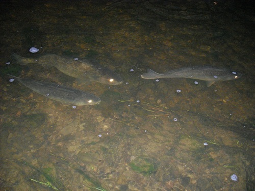

 Hansen et al. (1998) modeled recruitment variation of age-0 Walleye (Sander vitreus) in Escanaba Lake (Wisconsin) to determine factors regulating their abundance. Specifically, they examined the abundance of age-5 and older Walleye (spawning population), variation in May water temperatures, and abundance of 152.4 mm total length and longer Yellow Perch (Perca flavescens) on the abundance of age-0 Walleye. These data are available in this CSV file (these data are also available in WalleyeEL from FSAdata).
Load these data into R to answer the following questions.
- Which variable should be considered the “recruits”? Which variable should be considered the “spawning stock?” Explain.
- Describe the relationship between “recruits” versus “stock.” Do you expect a stock-recruitment model to fit these data well?
- Fit the following recruitment functions to these data, assuming a multiplicative error structure. Show your results by expressing the recruitment function with estimated values in place of the parameters.
- Density-independence.
- Ricker.
- Construct a single plot that shows how well each recruitment function fits these data.
- Estimate recruitment for the mean stock level with each recruitment function. How variable are the results among models?
- Determine if the density-dependent parameter is statistically significant in the Ricker model.
Continue with these data in this exercise.
from Derek H. Ogle , created 21-Jan-16, updated 06-Mar-16, Comments/Suggestions.